12
Network Programming
The Internet, in what has been called the Internet of Things, is starting to go beyond browsers and web servers to include Internet-enabled hardware. Printers, home automation devices, and even refrigerators are not only becoming smart, but also being connected to the Internet. And Arduino is at the forefront of DIY Internet devices using either a wired connection to an Ethernet Shield or a WiFi connection. In this chapter, we look at how to program the Arduino to make use of a network connection.

Networking Hardware
You have a number of choices for connecting your Arduino to the network. You can use an Ethernet Shield with an Arduino Uno or an Arduino with built-in Ethernet hardware, or go for the more expensive, but wireless, WiFi Shield.
Ethernet Shield
As well as providing an Ethernet connection, the Ethernet Shield (Figure 12-1) also provides a microSD card slot, which you can use to store data (see “Using SD Card Storage” in Chapter 6).
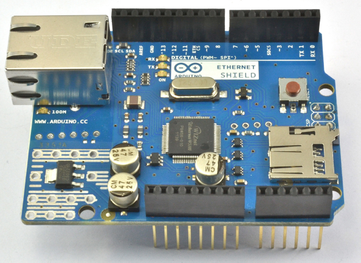
Figure 12-1 Ethernet Shield
The W5100 chip is used in the official boards; you can also find much lower-cost Ethernet Shields that use the ENC28J60 chipset. These less expensive boards are not compatible with the Ethernet library, however, and are frankly best avoided unless you have more time than budget.
Arduino Ethernet/EtherTen
An alternative to using a separate shield is to buy an Arduino with built-in Ethernet capability. The official version is the Arduino Ethernet, but a worthy and Uno-compatible third-party board is the EtherTen produced by Freetronics (www.freetronics.com). This board is shown in Figure 12-2.
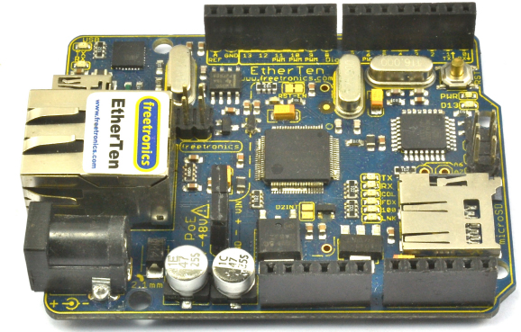
Figure 12-2 An EtherTen board
Combining everything onto one board makes a lot of sense when building a networked Arduino project. The Arduino Ethernet can also be fitted with a Power over Ethernet (PoE) adapter that, with a separate PoE injector, allows the board to be powered from an Ethernet lead, reducing the wires needed for the Arduino to be just a single Ethernet lead. The EtherTen board comes already configured to use PoE. For more information on using PoE with an EtherTen, see www.doctormonk.com/2012/01/power-over-ethernet-poe.html.
Arduino and WiFi
The problem with an Ethernet Internet connection is, of course, that it requires a wire. If you want your Arduino to connect to the Internet or to a network and operate wirelessly, then you need a WiFi Shield (Figure 12-3). These are somewhat expensive, but third-party alternatives are available such as the Sparkfun WiFly shield (https://www.sparkfun.com/products/9954).
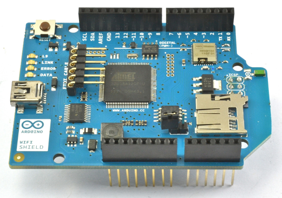
Figure 12-3 An Arduino WiFi Shield
The Ethernet Library
The Ethernet library has undergone a major revision since the release of Arduino 1.0 in 2011. In addition to allowing an Ethernet-equipped Arduino to act as either a web server or a web client (sending requests like a browser), the library also handles things like Dynamic Host Configuration Protocol (DHCP), which automatically assigns an IP address to the Arduino.
NOTE The official Arduino documentation on the Ethernet library is actually very good: http://arduino.cc/en/reference/ethernet.
Making a Connection
The first step, before any communication can take place, is to establish a connection from the Arduino to your network. The library function is called Ethernet.begin(). You can manually specify the connection settings for the board using the following syntax:
Let’s look at each of these parameters in turn:
• mac The mac address of the network card (I’ll explain this in a moment.)
• ip The IP address of the board (You have to select one acceptable to your network.)
• dns The IP address for a Domain Name Server (DNS)
• gateway The IP address for the Internet gateway (your home hub)
• subnet The subnet mask
This syntax looks a little daunting unless you are used to manual network administration. Fortunately, all the parameters except mac are optional, and 90 percent of the time, you will either specify mac and ip or, most likely, just the mac on its own. All the other settings are taken care of automatically.
The MAC, or Media Access Control, address is a unique identifier for the network interface; in other words, it’s the address for the Ethernet Shield or for whatever is providing the network interface for the Arduino. This strange-looking code only has to be unique for your network. You’ll usually find this number printed on the back of your Arduino Ethernet Shield or WiFi Shield (Figure 12-4) or on the box packaging. If you are using an older board that does not have a MAC address, then you can simply make one up. However, do not use the same made-up number more than once on your network.
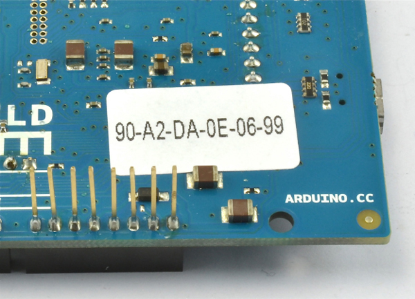
Figure 12-4 Mac address sticker on a WiFi Shield
You can also create a network connection using DHCP so the IP address is allocated dynamically; use this code:
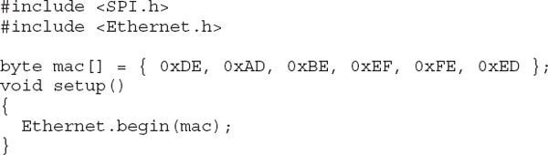
If you want to fix the IP address, which would be desirable if you wanted to run a web server on the Arduino, then you would use code like this:
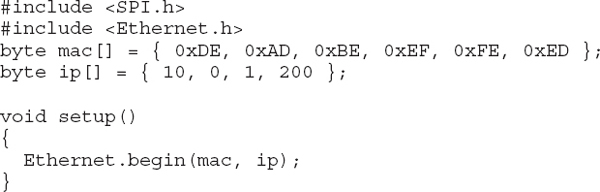
You need to ensure that the IP address you use is acceptable to your network. If you do not specify an IP address and use DHCP, then Ethernet.begin will return 1 if a connection is made and an IP address allocated; otherwise, it returns a 0. You can incorporate a test in which you make the connection and use the localIP function to retrieve the IP address allocated to the Arduino. The following example performs this test and reports the status to the Serial Monitor. This is a full sketch that you can try for yourself. But before you do, remember to change the MAC address in the code to match that of your interface board.
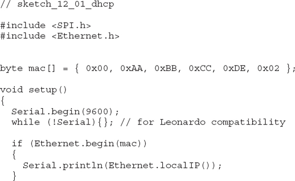
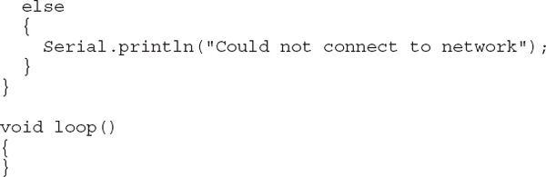
Setting Up a Web Server
The project “Physical Web Server,” described later in this chapter, illustrates the code structure of a web server sketch. In this section, we’ll look at the available web server functions.
The EthernetServer class contains most of the functions that you need for web serving. Having established a connection to the network, starting a web server requires two further steps. First, you need to create a new server object, specifying the port that the server should be listening on. This declaration appears in the sketch before the setup function.
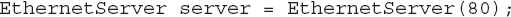
Web pages are usually served on port 80. So if you start the web server on port 80, you will not need to add a port number to any URL that connects to the server.
Second, to actually start the server, you use the following command in your setup function:
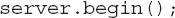
This function starts the server, and it will now be waiting for someone with a browser to load the web page that it is serving. This action is detected in the loop function of your sketch using the available function. This function returns either null (if there are no requests to service) or an EthernetClient object. This object is rather confusingly also used when making outgoing requests from the Arduino to web servers. In either case, EthernetClient represents the connection between a web server and a browser.
Having retrieved this object, you can then read the incoming request using read and you can write HTML to it using the write, print, and println functions. Once you’ve finished writing the HTML to the client, you need to call stop on the client object to end the session. I explain how to do this in “Physical Web Server” later in this chapter.
Making Requests
In addition to having the Arduino act as a web server, you can also have it act like a web browser, issuing HTTP requests to a remote web server, which may be on your own network or on the Internet.
When making web requests from the Arduino, you first establish a network connection in just the same way that you did in the previous section for the web server, but instead of creating an EthernetServer object, you create an EthernetClient object:
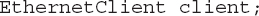
You do not need to do anything more with the client object until you want to send a web request. Then you write something like this:
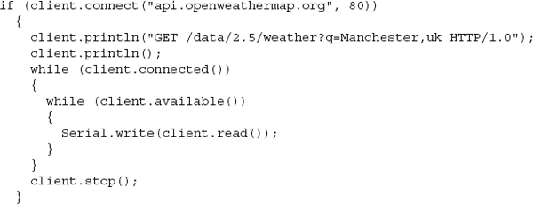
The connect function returns true if the connection is successful. The two client.println commands are responsible for requesting the desired page from the web server. The two nested while loops then read data as long as the client is connected and data is available.
It may look tempting to combine the two while loops, with a condition of client.available() && client.connected(), but combining them is not quite the same as treating them separately, as the data may not be available continuously from the web server because of connection speed and so on. The outer while loop keeps the request alive, fetching the data.
This approach is “blocking” (the Arduino will not do anything else until the request is complete). If this is not acceptable for your project, you can include code to check for other conditions inside the inner while loop.
Ethernet Examples
The following two examples serve to illustrate the use of the Ethernet library in practical settings. Between the two of them, the examples cover most things that you are likely to want to do with a networked Arduino.
Physical Web Server
This first example illustrates perhaps the most likely web-related use of an Arduino. In it, the Arduino acts as a web server. Browsers connecting to the Arduino web server not only see readings from the analog inputs, but visitors can also press buttons on the web page to change the digital outputs (Figure 12-5).
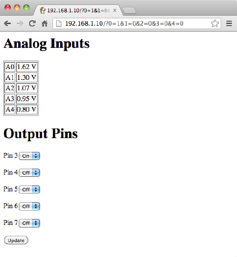
Figure 12-5 Physical web server interface
This example is actually a great way to interface an Arduino with a smartphone or tablet computer, as a device only has to have the most basic of browsers on it to be able to send requests to the Arduino. The sketch for this example (sketch_12_02_server) is some 172 lines long, so rather than list it in full here, I encourage you to load it in the Arduino IDE for reference as I walk you through it.
The first part of the sketch is pretty standard for a network sketch. The libraries are imported, and both EthernetServer and EthernetClient objects are defined.
The variables in the next section perform various roles:
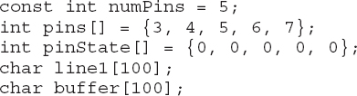
The constant numPins defines the size of the arrays pins and pinState. The pinState array is used to remember whether the particular output pin is HIGH or LOW. The setup function declares all the pins in the pins array to be outputs. It also establishes the network connection in the same way as in the earlier examples. Finally, the line1 and buffer character arrays hold the first line of the HTTP request and subsequent lines, respectively.
Here is the loop function:
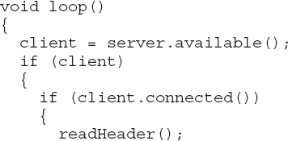
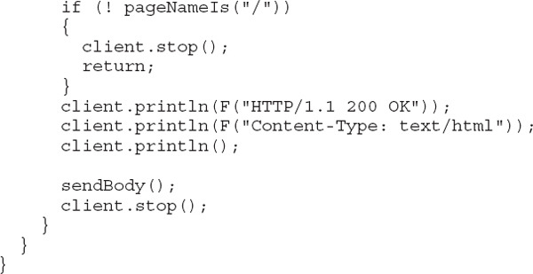
The loop function checks to see if there are any requests from browsers waiting to be processed. If there is a request and there is a connection, then the readHeader function is called. You’ll find the code for this toward the end of the sketch. The readHeader function reads the contents of the request header into a buffer (line1) and then skips over the remaining lines of the header. This is required so you have access to the page name (requested by the browser) as well as any request parameters.
Note that because the sketch has a fair amount of text to send to the Serial Monitor and network, I use the F function to store the character arrays in flash memory (see Chapter 6).
Having read the header, the pageNameIs function (again near the end of the file) is called to ensure the page being requested is the root page (/). If it is not the root page, then the request is ignored. This is important because many browsers automatically send a request to a server to find an icon for the website. You don’t want this request being confused with other requests to the server.
Now you need to generate a response in the form of a header and some HTML to be returned to the browser for display. The sendHeader function generates an “OK” response to indicate to the browser that the request is valid. The sendBody function, shown here, is a lot more complicated:
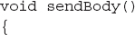
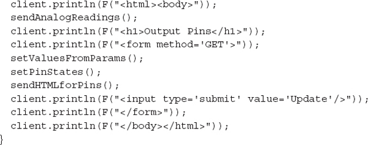
This function prints the basic template of the HTML page, relying on a number of helper functions to break the code down into more manageable chunks. The first of these is sendAnalogReadings:
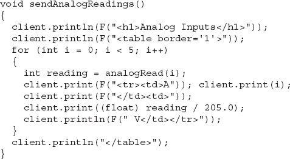
This loops over each of the analog inputs, reading the value and writing out an HTML table containing all the readings as voltages.
You may have noticed that the sendBody function also calls setValuesFromParams and setPinStates. The first of these uses the function valueOfParam to set the pinStates variable containing the states of the output pins HIGH or LOW depending on the value of the request parameters that were contained in the request header:
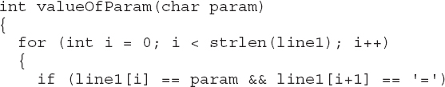
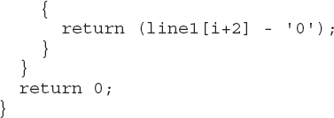
The valueOfParam function expects the request parameter to be a single digit. You can see what these parameters look like if you run the example and browse to the page and press Update. The URL string will then change to include the parameters and look something like this:
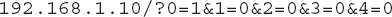
The parameters start after the ? and take the form X=Y, separated by &. The part before the = is the parameter name (in this case, a digit from 0 to 4) and the part after the = is its value, which is 1 for on and 0 for off. To make life easy for yourself, these request parameters must be only a single character or, in this case, a single digit. The setPinStates function then transfers the state of the output pins held in the pinStates array to the actual output pins themselves.
Let’s return to the sendBody function for a moment. The next thing that you need to send is the HTML for the collection of drop-down lists for each output. You need the values of True or False in the list to be set to agree with the current state of the output. You accomplish this by adding the text “selected” to the value that agrees with the value for that pin in the pinStates array.
All the HTML generated for the output pins is contained within a form, so when a visitor presses the Update button, a new request to this page with the appropriate request parameters to set the outputs is generated. At this point, let’s look at the HTML code that is generated for the page:
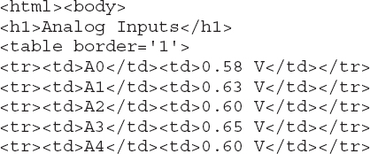

You can see this using your browser’s View Source feature.
Using a JSON Web Service
To illustrate sending a web request from an Arduino to a website, I’ll use a web service that returns data about the weather in a particular location. It reports a short description of the weather to the Serial Monitor (Figure 12-6). The sketch sends the request once during startup, but the example could easily be changed to check every hour and display the result on a 16×2 LCD display.
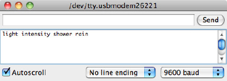
Figure 12-6 Retrieving weather information from a web service
The sketch for this example is quite short, just 45 lines of code (sketch_12_03_web_request). Most of the interesting code is in the function hitWebPage:
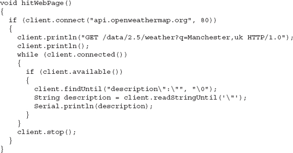
The first step is to get the client to connect to the server on port 80. If this is successful, then the page request header is written to the server:
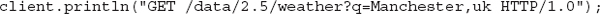
The extra println is needed to mark the end of the request header and trigger a response from the server.
To wait for the connection, the if statement inside the while loop detects when data is available to be read. Reading the data stream directly avoids the need to capture all of the data into memory. The data is in JSON format:
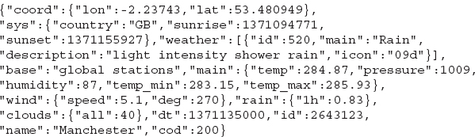
Returning to the hitWebPage function, we are going to extract the section of the text from “description” followed by a colon and then double quotation marks until the next double quotation mark using the findUntil and readStringUntil functions.
The findUntil function just ignores everything from the server until the matching string is found. The readStringUntil function then reads all the subsequent text until the double quote character.
The WiFi Library
As you might expect, the WiFi library is quite similar to the Ethernet library. If you substitute WiFi for Ethernet, WiFiServer for EthernetServer, and WiFiClient for EthernetClient, then everything else in your sketch can pretty much stay the same.
Making a Connection
The main differences between the WiFi and Ethernet libraries are in how a connection is established.
First, you need to import the WiFi library:
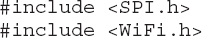
To establish a connection, use the WiFi.begin command, supplying it with the name of your wireless network and your password.
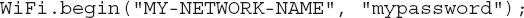
The WiFi example that follows in “WiFi Example” illustrates the other differences that you need to be aware of.
WiFi Specific Functions
The WiFi library has some extra WiFi-specific functions that you can use. These functions are summarized in Table 12-1.
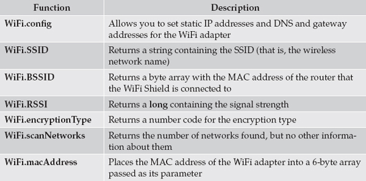
Table 12-1 WiFi Specific Features
You can find full documentation for the WiFi library here: http://arduino.cc/en/Reference/WiFi.
WiFi Example
For the example, I modified sketch_12_02_server to work with a WiFi Shield. You can find the code in sketch_12_04_server_wifi. Rather than repeat the whole example, I will just highlight the changes from the original version.
First, to make the connection to a wireless access point, you need to specify the name of the wireless network and its password:
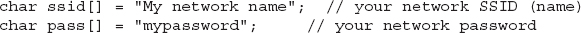
You also need to change the names of the classes for the server and client from EthernetServer and EthernetClient to WiFiServer and WiFiClient:
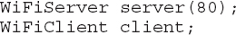
You still need to specify port 80 when defining the server.
The next difference between the two shields is at the point where the connection starts. In this case, you must use
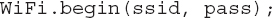
The remainder of the code is almost exactly the same as the Ethernet code. You will find a delay(1) command in loop before the client is stopped, which gives the client time to finish reading before the communication is closed. You don’t need this in the Ethernet version. You’ll also notice that I combined some of the client.print calls into fewer calls of bigger strings. This speeds up the communication as the WiFi Shield deals with sending small strings quite inefficiently. However, be aware that the strings in an individual client.print or client.println cannot be longer than 90 bytes or they will not be sent.
The WiFi version of this program is considerably slower than the Ethernet version, taking up to 45 seconds to load. The firmware on the WiFi Shield can be updated, and if in the future the Arduino team improves the efficiency of the WiFi Shield, then it may be worth updating the firmware. Look for instructions for this on the WiFi Shield web page: http://arduino.cc/en/Main/ArduinoWiFiShield.
Summary
In this chapter, you looked at a variety of ways to connect your Arduino to a network and then make it do something, using both Ethernet and Wi-Fi Shields. You have also learned how to use an Arduino as both a web server and a web client.
In the next chapter, you’ll learn about Digital Signal Processing (DSP) with the Arduino.